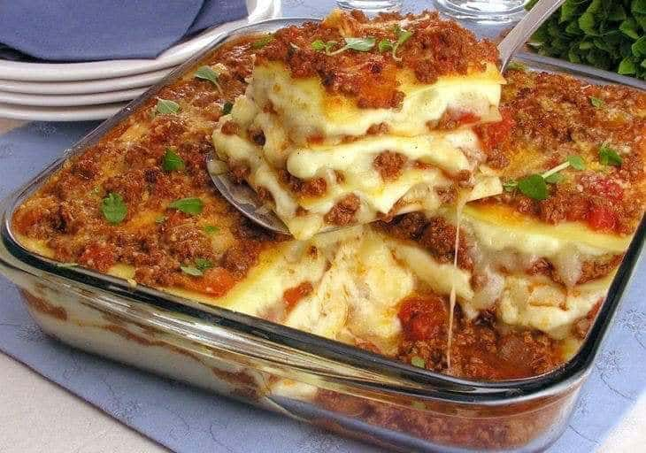

MacarrãoIngredientes:
Para o molho:
Modo de preparo:Coloque a água para ferver, quando estiver fervendo, coloque o sal, 1 colher de óleo e o macarrão. Observe se o macarrão esta meio mole, tire do fogo e escorra a água no escorredor de macarrão, lave o macarrão e reserve. Faça o molho de sua preferência em outra panela, coloque o óleo ou a margarina, a cebola e o alho, logo após de dourar, coloque o pimentão e o tomate. Refogue e coloque uma colherzinha de sal, o extrato de tomate (se quiser) e os temperos. Junte molho pronto com o macarrão e sirva com queijo ralado. |

Sopa de MandiocaIngredientes:
Modo de preparo:Aqueça o óleo e doure a cebola e o alho, em fogo médio, coloque a carne e frite até dourar; Em seguida esfarele o caldo de carne, tempere com sal e pimenta, acrescente a mandioca e refogue por cerca de 5 minutos; Adicione a água, tampe a panela e deixe cozinhar por 25 minutos ou até a mandioca ficar macia, vá mexendo de vez em quando; Depois que a mandioca estiver macia, retire alguns pedaços de mandioca, amasse com a ajuda de um garfo e volte para a panela; Caso seja necessário, acrescente mais água e cozinhe por mais 5 minutos, logo após transfira para uma sopeira ou travessa e decore com a salsa. |

Carne assada com batatasIngredientes:
Modo de preparo:Um dia antes, tempere a carne com o alho, a cebola, o tomate, cheiro verde, sal, temperos a gosto e limão. Deixe descansar na geladeira de um dia para o outro. Em uma panela grande, coloque um pouco de óleo e o açúcar. Quando o açúcar dourar coloque o pedaço de carne dentro, virando até dourar por inteiro. Coloque água até a metade da panela e deixe cozinhar por uns 50 minutos ou até a carne estar cozida. Neste meio tempo descasque as batatas e corte-as ao meio. Depois coloque-as na panela juntamente com a carne e deixe cozinhar até ficarem douradas. Coloque em um pirex e sirva com arroz, salada ou macarrão feito em casa. |

Pernil de Porco AssadoIngredientes:
Modo de preparo:Um dia antes de assar, com uma faca pontuda faça pequenos furos no pernil. Dissolva em 2 copos de água morna os 2 cubos de caldo de carne. Reserve. Descasque os alhos e bata no batedor de alho com sal, acrescente (dentro do batedor de alho mesmo), o suco dos 3 limões, pimenta-do-reino e junte com o caldo de carne, mexa bem. Em uma vasilha coloque o pernil e junte todo o tempero preparado, acrescente a cebola picada e o cheiro verde picado. Com o dedo coloque o alho e a cebola com o caldo dentro dos furos. Reserve. Quando for assar, embrulhe o pernil no papel alumínio. Asse por 2 horas no forno em temperatura alta, depois tire o papel alumínio e deixe dourar. Pode assar na brasa, fica uma delícia. |
FeijoadaIngredientes para a dessalga das carnes:
Ingredientes para a feijoada:
Modo de preparo para a dessalga das carnes:Comece o preparo da feijoada no dia anterior para dessalgar as carnes. Descarte o excesso de gordura das peças. Corte o lombo e a carne-seca em cubos médios de cerca de 3 cm. Apoie a peça de costelinha na tábua e corte a carne entre os ossinhos para separar as ripas. Coloque cada tipo de carne numa tigela grande, cubra com bastante água e leve à geladeira. Deixe de molho por 24 horas para dessalgar, trocando a água a cada 3 horas, de preferência. Modo de preparo da feijoada:Coloque o feijão numa peneira e lave bem sob água corrente. Transfira os grãos para uma tigela grande e cubra com 2,5 litros de água – se algum boiar, descarte. Cubra com um prato e deixe de molho por 30 minutos – se o feijão ficar muito tempo de molho pode perder a cor e desmanchar durante o longo cozimento da feijoada. Enquanto isso, faça o pré-cozimento das carnes. Escorra a água das carnes dessalgadas e transfira para um caldeirão grande (ou panela) com capacidade para 11 litros. Cubra as carnes com água e leve ao fogo alto – cerca de 4 litros bastam, a quantidade pode variar de acordo com o tamanho da panela, o importante é que as carnes devem ficar completamente imersas. Deixe cozinhar por 10 minutos em fogo alto, contados após a fervura – o pré-cozimento elimina o excesso de gordura e sal das carnes. Enquanto isso, descasque e pique fino as cebolas e os dentes de alho. Com uma faca pequena, retire a pele dos paios. Escorra a água do feijão. Passados os 10 minutos, com uma escumadeira, transfira as carnes pré-cozidas para uma tigela grande e descarte a água do cozimento, com cuidado para não se queimar. Volte o caldeirão ao fogo alto. Quando aquecer, regue com o azeite, adicione a cebola e tempere com uma pitada de sal. Refogue por cerca de 8 minutos até começar a dourar. Junte o alho, o cominho, as folhas de louro e mexa por 1 minuto para perfumar. Acrescente o feijão demolhado ao refogado e misture bem. Adicione 6 litros de água e mantenha a panela em fogo alto. Assim que começar a ferver, junte a carne-seca e a costelinha pré-cozidas, abaixe o fogo e deixe cozinhar por 2 horas, mexendo de vez em quando. Após as primeiras 2 horas de cozimento, junte o lombo pré-cozido e os paios inteiros. Deixe cozinhar em fogo baixo por mais 3 horas, mexendo de vez em quando delicadamente para não desmanchar os grãos de feijão. Faltando 30 minutos para o fim do cozimento, com uma pinça, transfira os paios para a tábua e corte cada um em fatias de 1 cm, na diagonal. Volte as fatias para a panela e deixe cozinhar até completar as 5 horas de cozimento total, ou até que as carnes estejam bem macias e o caldo da feijoada comece a engrossar. Sirva com arroz, couve refogada, farinha de mandioca e vinagrete. |

LasanhaIngredientes:1 pacote de lasanha (direto ao forno ou massa fresca ou de cozimento, tanto faz, fica a seu gosto, porém que vão direto no forno o molho não pode ser grossas seu cozimento, vide instruções da embalagem). Molho Vermelho:
Molho Branco:
Recheio:
Modo de preparo:Molho vermelho:Frite o alho e a cebola, coloque a carne moída, deixe cozinhar bem. Junte os 5 tomates picados, molho de tomate e sal a gosto. Reserve. Molho Branco:Frite a cebola em uma panela razoavelmente grande (com um fio minimo de manteiga), só para murcharem, acrescente o leite, deixe ferver e reserve.
À parte desmanche a farinha com um pouco de água.
Volte o leite ao fogo baixo, acrescente a farinha desmanchada, o queijo ralado, a manteiga e o sal a gosto, mexa sem parar até engrossar, por último com o fogo desligado acrescente o creme de leite. Montagem da Lasanha:Em uma forma grande de comprimento ou uma média funda, faça uma camada de molho branco, uma camada de lasanha, uma camada de molho vermelho, uma camada de muçarela, uma camada de presunto e assim sucessivamente. A última camada deverá ser de molho branco com muçarela por cima, leve ao forno brando ate derreter o queijo. |